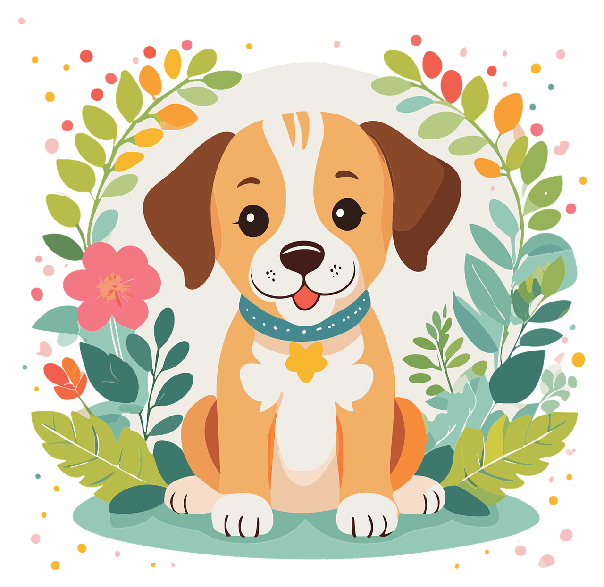
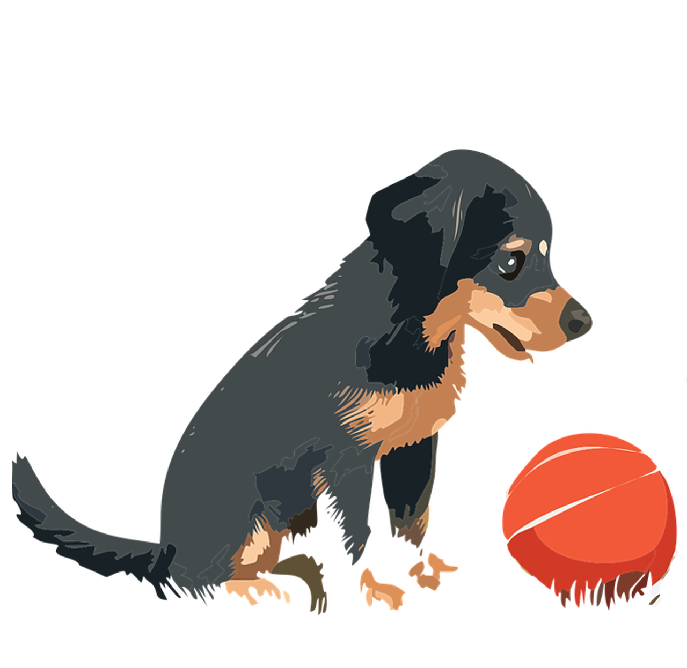
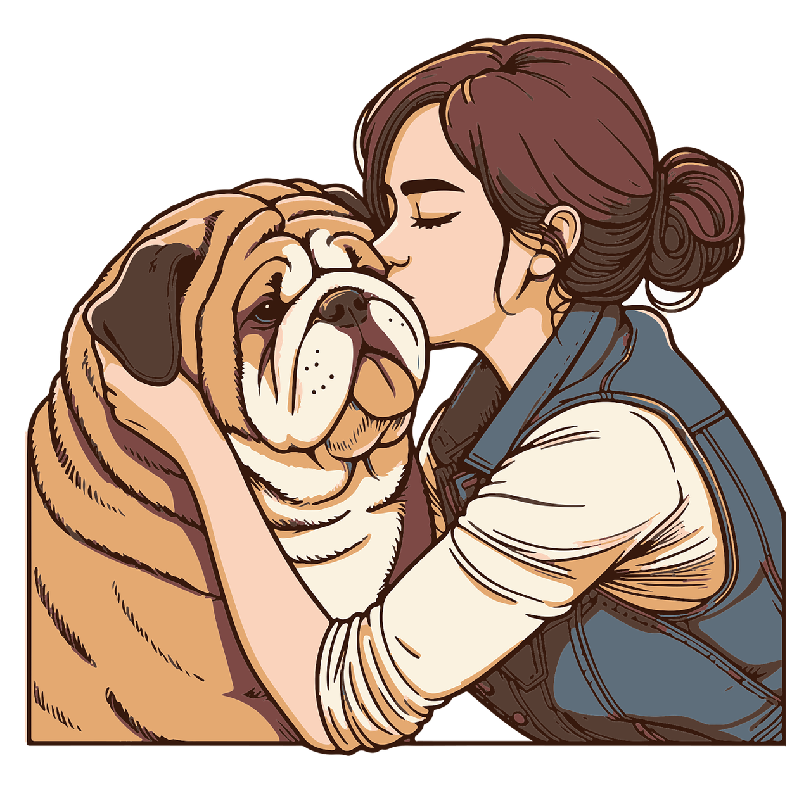
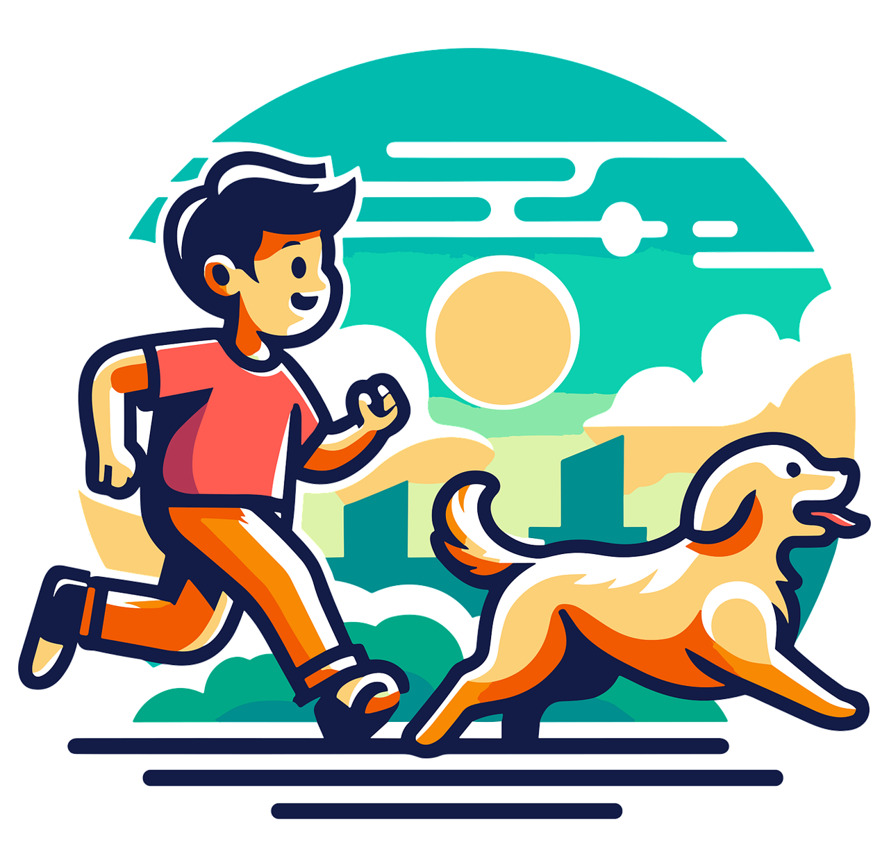
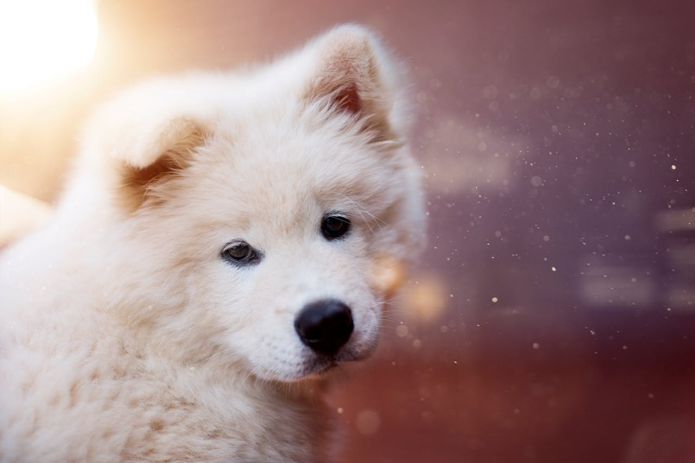
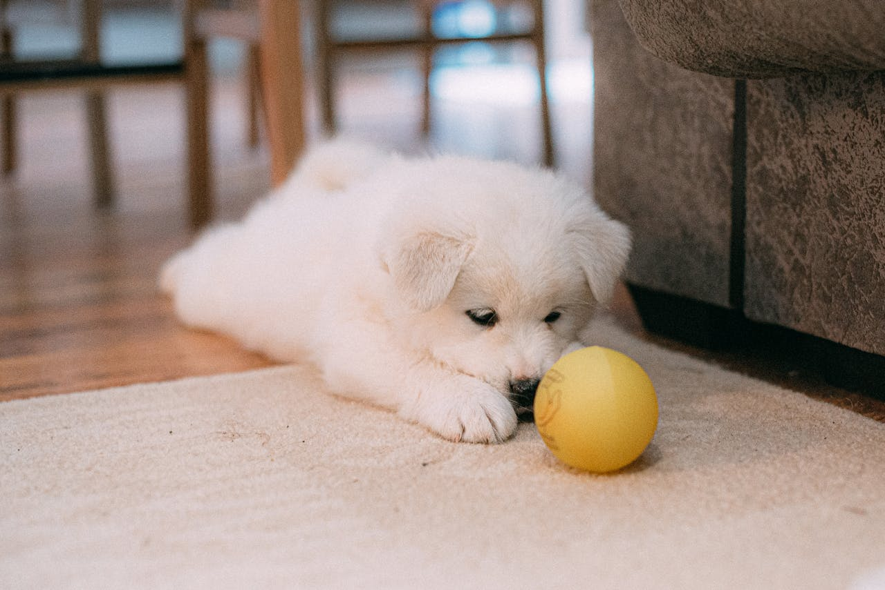
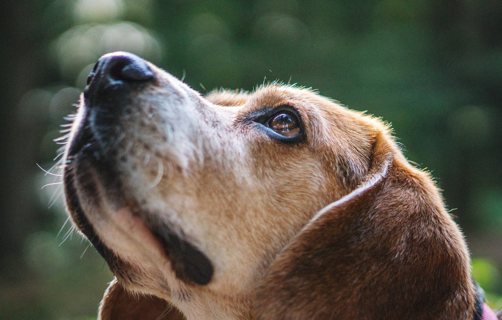
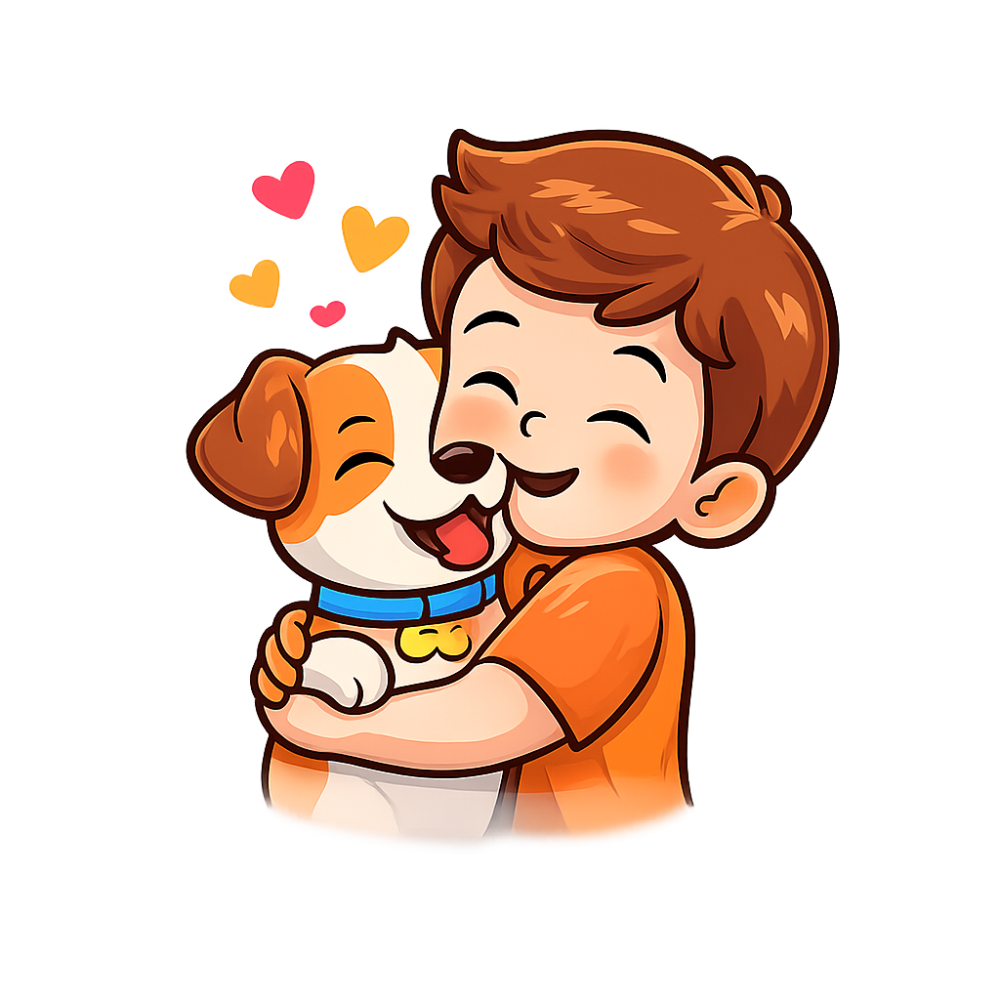

Building trust is the foundation of all puppy training. When a puppy feels safe, it becomes more open to learning. Gentle voice, calm movements, and patience create confidence. Trust turns training into a joyful experience.

Puppies learn best in short, playful sessions. Quick activities prevent boredom and frustration. Fun training keeps their attention and energy balanced. Happy learning leads to faster progress.

Positive reinforcement motivates puppies to repeat good actions. Small treats, praise, or affection work wonders. Rewards help puppies understand what they did right. This method builds enthusiasm instead of fear.

Using the same commands helps puppies learn faster. Consistency reduces confusion and builds clarity. Clear signals improve focus and memory. Regular practice creates confident and well behaved puppies.
Teaching a puppy basic tricks helps kids and adults develop patience, consistency, and calm communication. Each step reminds us that learning takes time and mistakes are part of the process. Children learn empathy by understanding a puppy’s feelings and responses. Adults rediscover the value of positive reinforcement and gentle guidance. These shared training moments strengthen focus, emotional control, and problem-solving skills. In the end, both the puppy and the trainer grow together — learning life lessons through simple actions.

Puppies learn through repetition, tone, and body language. Understanding their emotions helps trainers respond patiently and kindly. When puppies feel safe, they become more confident and eager to learn. Strong understanding creates a stronger bond between puppy and trainer.

Breaking tricks into small steps makes learning easier for puppies. Clear instructions prevent confusion and reduce stress. Step-based training builds focus, memory, and discipline. Consistency helps puppies master tricks faster and happily.

Positive training encourages happiness, patience, and emotional balance. Kids learn responsibility while adults improve calm communication. Reward-based methods build trust instead of fear. Training becomes a joyful experience for everyone involved.

This project is created to help kids and adults understand the right way to teach puppies basic tricks. We focus on gentle training methods that build trust, happiness, and confidence in young dogs. By breaking each trick into simple steps, learning becomes easy, interactive, and stress-free.
Our goal is to encourage responsible pet care while strengthening the bond between puppies and their owners. Because a happy puppy learns better — and grows into a well-behaved companion.